8.4 Model Design
The suitability of a model for its intended purpose depends on choices that the modeler makes. There are three fundamental choices:
- The data.
- The response variable.
- The explanatory variables.
8.4.1 The data
How were the data collected? Are they a random sample from a relevant sampling frame? Are they part of an experiment in which one or more variables were intentionally manipulated by the experimenter, or are they observational data? Are the relevant variables being measured? (This includes those that may not be directly of interest but which have a strong influence on the response.) Are the variables being measured in a meaningful way? Start thinking about your models and the variables you will want to include while you are still planning your data collection.
When you are confronted with a situation where your data are not suitable, you need to be honest and realistic about the limitations of the conclusions you can draw.
8.4.2 The response variable
The appropriate choice of a response variable for a model is often obvious. The response variable should be the thing that you want to predict, or the thing whose variability you want to understand. Often, it is something that you think is the effect produced by some other cause.
For example, in examining the relationship between gas usage and outdoor temperature, it seems clear that gas usage should be the response: temperature is a major determinant of gas usage. But suppose that the modeler wanted to be able to measure outdoor temperature from the amount of gas used. Then it would make sense to take temperature as the response variable.
Similarly, wages make sense as a response variable when you are interested in how wages vary from person to person depending on traits such as age, experience, and so on. But suppose that a sociologist was interested in assessing the influence of income on personal choices such as marriage. Then the marital status might be a suitable response variable, and wage would be an explanatory variable.
8.4.3 Explanatory variables
Much of the thought in modeling goes into the selection of explanatory variables and we will see several ways to decide if an explanatory variable ought to be included in a model.
Of course, some of the things that shape the choice of explanatory variables are obvious. Do you want to study sex-related differences in wage? Then sex had better be an explanatory variable. Is temperature a major determinant of the usage of natural gas? Then it makes sense to include it as an explanatory variable.
You will see situations where including an explanatory variable hurts the model, so it is important to be careful. A much more common mistake is to leave out explanatory variables. Unfortunately, few people learn the techniques for handling multiple explanatory variables and so your task will often need to go beyond modeling to include explaining how this is done.
When designing a model, you should think hard about what are potential explanatory variables and be prepared to include them in a model along with the variables that are of direct interest.
8.4.4 Model terms
Once the modeler has selected explanatory variables, a choice must be made about model terms.
Notice that the various models have graphs of different shapes. The gas-usage model is a gentle curve, the wage-vs-sex model is just two values, and the more elaborate wage model is four lines with different slopes and intercepts.
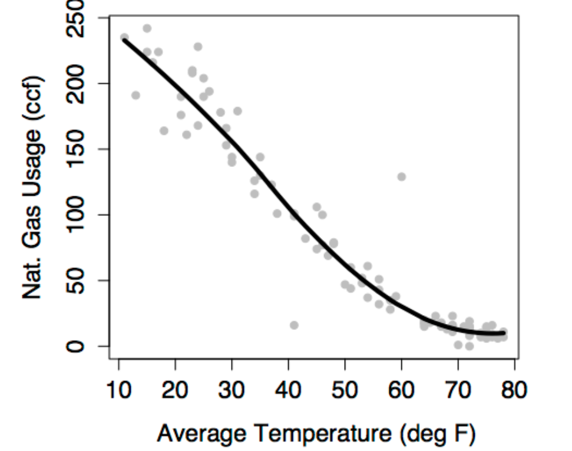 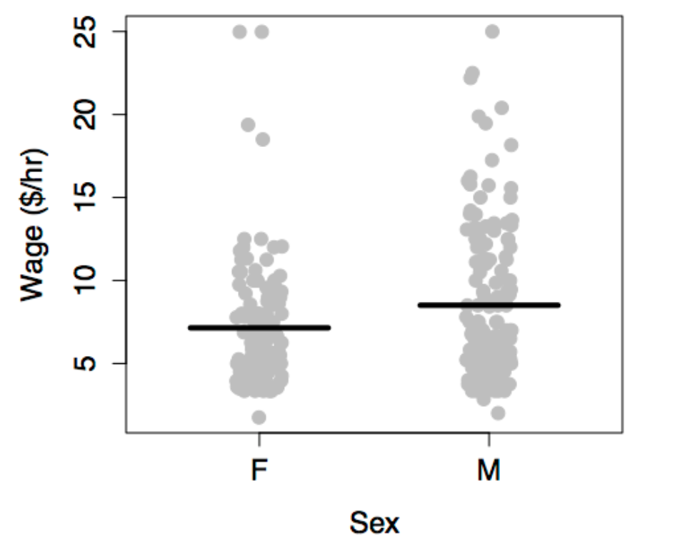 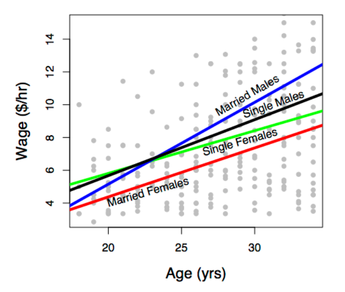
The modeler determines the shape of the model through his or her choice of model terms. The basic idea of a model term is that explanatory variables can be included in a model in more than one way. Each kind of term describes a different way to include a variable in the model.
You need to learn to describe models using model terms for several reasons.
- First, you will communicate in this language with the computers that you will use to perform the calculations for models.
- Second, when there is more than one explanatory variable, it’s hard to visualize the model function with a graph. Knowing the language of model terms will help you “see” the shape of the function even when you can’t graph it.
- Third, model terms are the way to talk about “parts” of models. In evaluating a model, statistical methods can be used to take the model apart and describe the contribution of each part.
There are just a few basic kinds of models terms. They will be introduced by examples.
- intercept term: a sort of “baseline” that is included in almost every model.
- main terms: the effect of explanatory variables directly.
- interaction terms how different explanatory variables modulate the relationship of each other to the response variable.
- transformation terms: simple modifications of explanatory variables.
Models almost always include the intercept term and a main term for each of the explanatory variables. Transformation and interaction terms can be added to create more expressive or flexible shapes.
8.4.5 Swimming world records
The data are the record time (in seconds) for the 100-meter freestyle race along with the year in which the record was set and the sex of the swimmer. The response variable will be time, the explanatory variables will be year and sex.
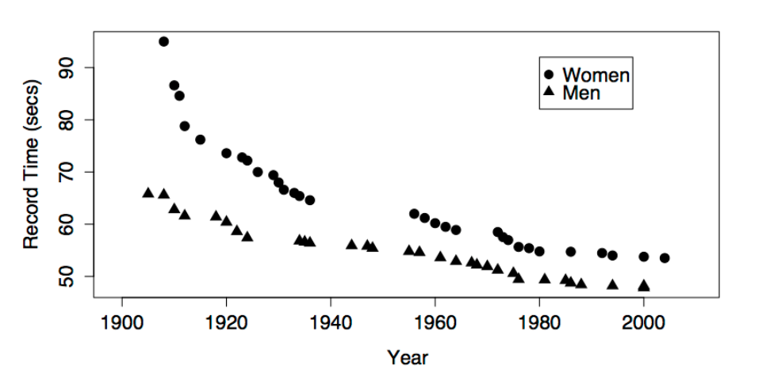 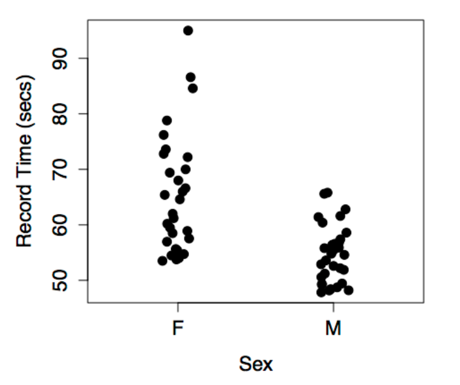
The figures show some obvious patterns, seen most clearly in the plot of time versus year. The record time has been going down over the years. This is natural, since setting a new record means beating the time of the previous record. There’s also a clear difference between the men’s and women’s records; men’s record times are faster than women’s, although the difference has decreased markedly over the years.
The following models may or may not reflect these patterns, depending on which model terms are included.
The intercept term is included in almost every statistical model. The intercept term is a bit strange because it isn’t something you measure; it isn’t a variable. (The term “intercept” will make sense when model formulas are introduced in the next section).
The figure below shows the swimming data with a simple model consisting only of the intercept term.
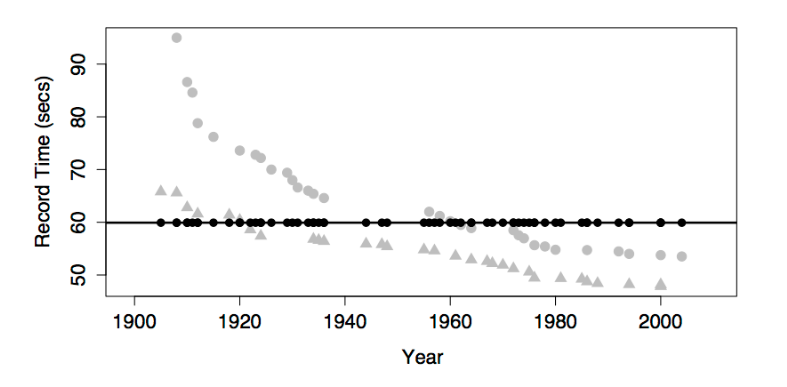 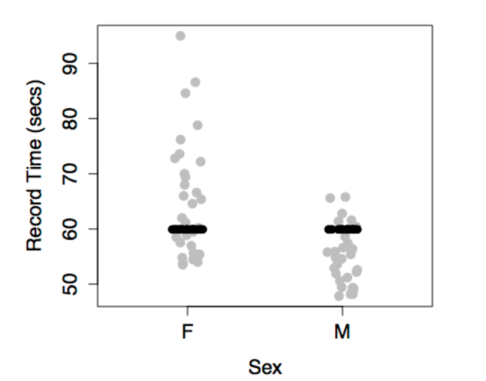
The model value for this model is exactly the same for every case. In order to create model variation from case to case, you would need to include at least one explanatory variable in the model.
The most basic and common way to include an explanatory variable is as a main effect. Almost all models include the intercept term and a main term for each of the explanatory variables.
This produces model values that vary with year, but show no difference between the sexes. This is because sex has not been included in the model.
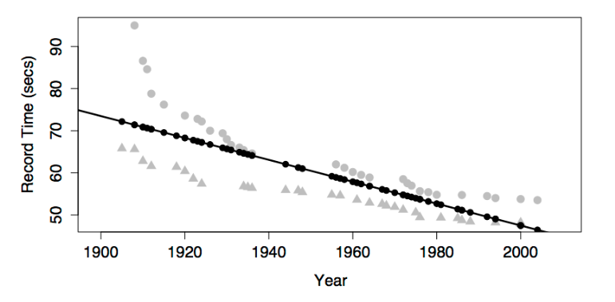 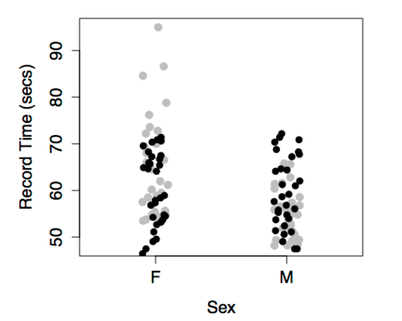
The model values have been plotted out as small black dots. The model pattern is evident in the first graph: swim time versus year. But in the second graph – swim time versus sex – it seems to be all scrambled.
Don’t be confused by this. The right-hand graph doesn’t include year as a variable, so the dependence of the model values on year is not at all evident from that graph. Still, each of the model value dots in the left graph occurs in the right graph at exactly the same vertical coordinate.
This produces different model values for each level of sex.
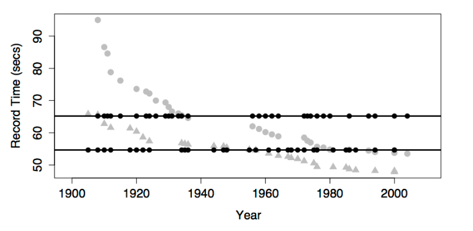 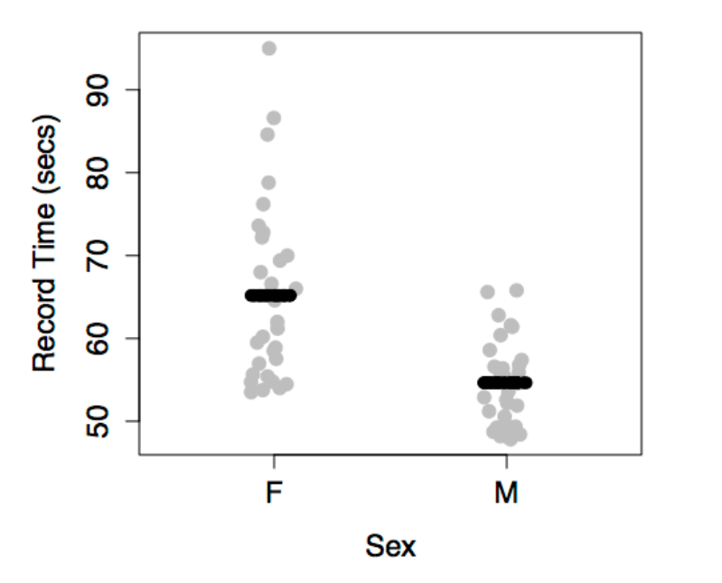
There is no model variation with year because year has not been included in the model. This model gives dependence on both sex and year.
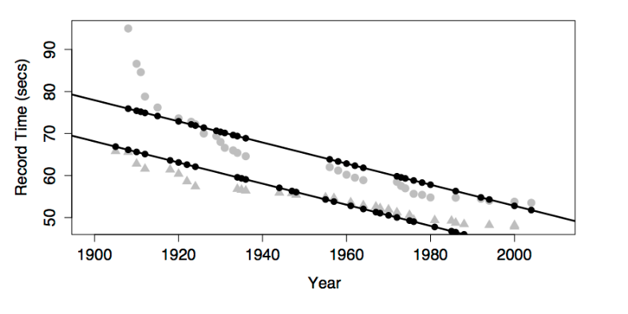 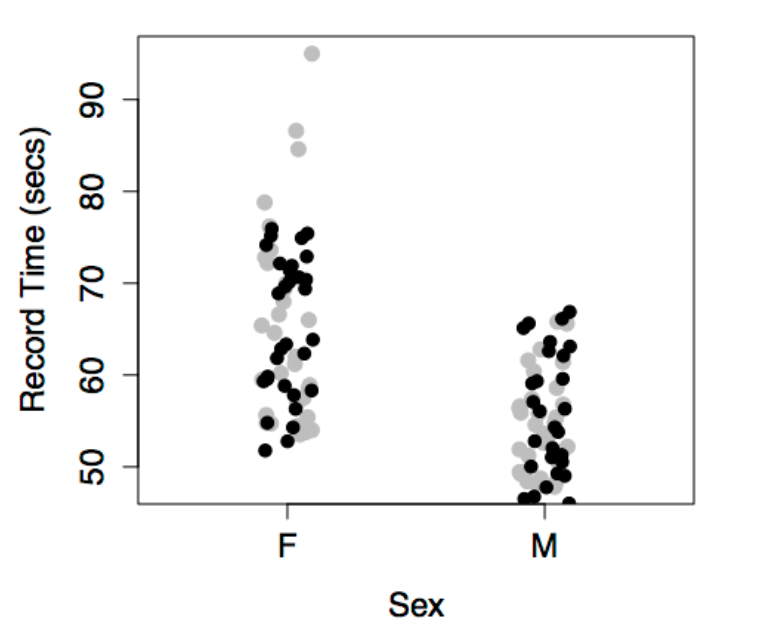
Note that the model values form two parallel lines in the graph of time versus year: one line for each sex.
Interaction terms combine two other terms, typically two main terms. An interaction term can describe how one explanatory variable modulates the role of another explanatory variable in modeling the relationship of both with the response variable.
In the graph, including the interaction term between sex and year produces a model with two non-parallel lines for time versus year. (The model also has the main terms for both sex and year and the intercept term, as always.)
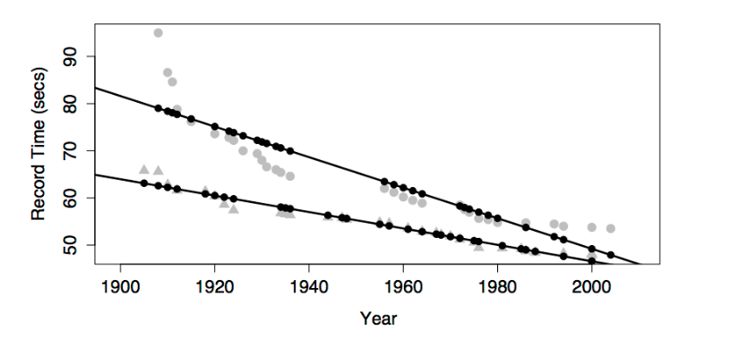 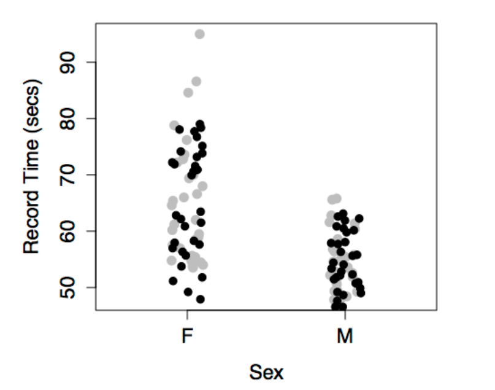
One way to think about the meaning of the interaction term in this model is that it describes how the effect of sex changes with year.
Looking at the model, you can see how the difference between the sexes changes over the years; the difference is getting smaller. Without the interaction term, the model values would be two parallel lines; the difference between the lines wouldn’t be able to change over the years.
Another, equivalent way to put things is that the interaction term describes how the effect of year changes with sex. The effect of year on the response is reflected by the slope of the model line. Looking at the model, you can see that the slope is different depending on sex: steeper for women than men.
For most people, it’s surprising that one term – the interaction between sex and year – can describe both how the effect of year is modulated by sex, and how the effect of sex is modulated by year. But these are just two ways of looking at the same thing.
A common misconception about interaction terms is that they describe how one explanatory variable affects another explanatory variable. Don’t fall into this error. Model terms are always about how the response variable depends on the explanatory variables, not how explanatory variables depend on one another. An interaction term between two variables describes how two explanatory variables combine jointly to influence the response variable.
Once people learn about interaction terms, they are tempted to include them everywhere. After all, it’s natural to think that world record swimming times would depend differently on year for women than for men. Of course wages might depend differently on age for men and women! Regretably, the uncritical use of interaction terms can lead to poor models.
A transformation term is a modification of another term using some mathematical transformation. Transformation terms only apply to quantitative variables. Some common transformations are \(x^2\) or \(\sqrt{x}\) or \(\log(x)\), where the quantitative explanatory variable is \(x\).
A transformation term allows the model to have a dependence on \(x\) that is not a straight line. The graph shows a model that includes these terms: an intercept, main effects of sex and year, an interaction between sex and year, and a year-squared transformation term.
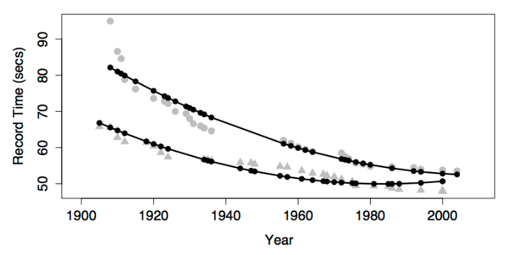 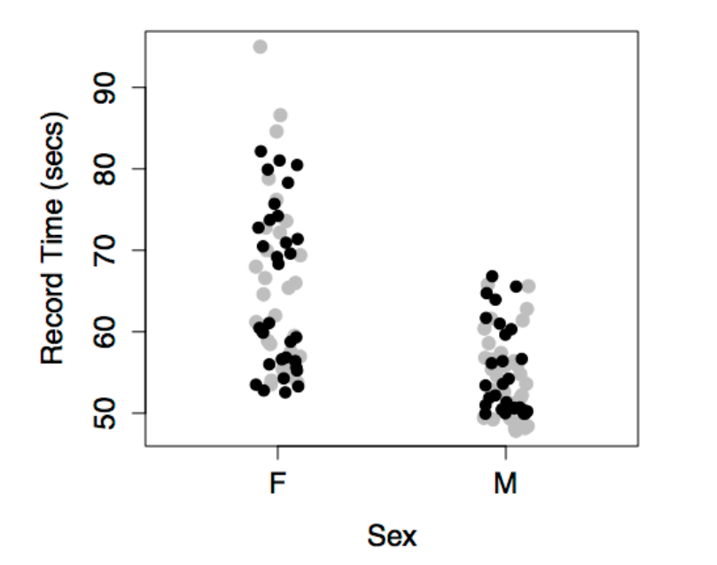
Adding in the year-squared term provides some curvature to the model function.
Look carefully at the model with a year-squared transformation term. You may notice that, according to the model, world record times for men have been getting worse since about year 1990. This is, of course, nonsense. Records can’t get worse. A new record is set only when an old record is beaten.
The model doesn’t know this common sense about records – the model terms allow the model to curve in a certain way and the model curves in exactly that way. What you probably want out of a model of world records is a slight curve that’s constrained never to slope upward.
There is no elementary way to do this. Indeed, it is an unresolved problem in statistics how best to include in a model additional knowledge that you might have such as “world records can’t get worse with time.”
It’s possible to construct a model with main terms but no intercept terms. If the explanatory variables are all quantitative, this is almost always a mistake. The figure, which plots the model function for swim time modeled by age with no intercept term, shows why.
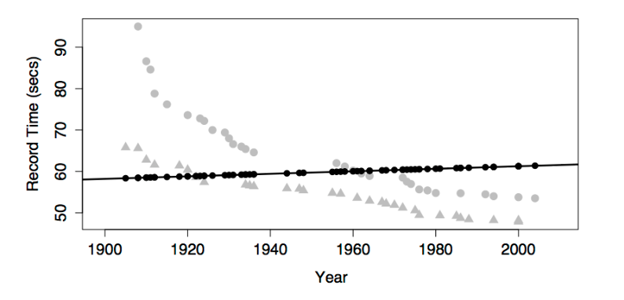 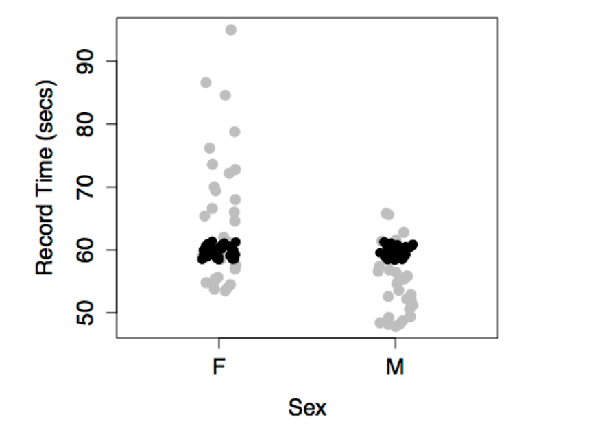
The model function is sloping slightly upward rather than falling as the data clearly indicate. This is because, without an intercept term, the model line is forced to go through the origin. The line is sloping upward so that it will show a time of zero in the hypothetical year zero! Silly. It’s no wonder that the model function fails to look anything like the data.
Never leave out the intercept unless you have a very good reason. Indeed, statistical software typically includes the intercept term by default. You have to go out of your way to tell the software to exclude the intercept.